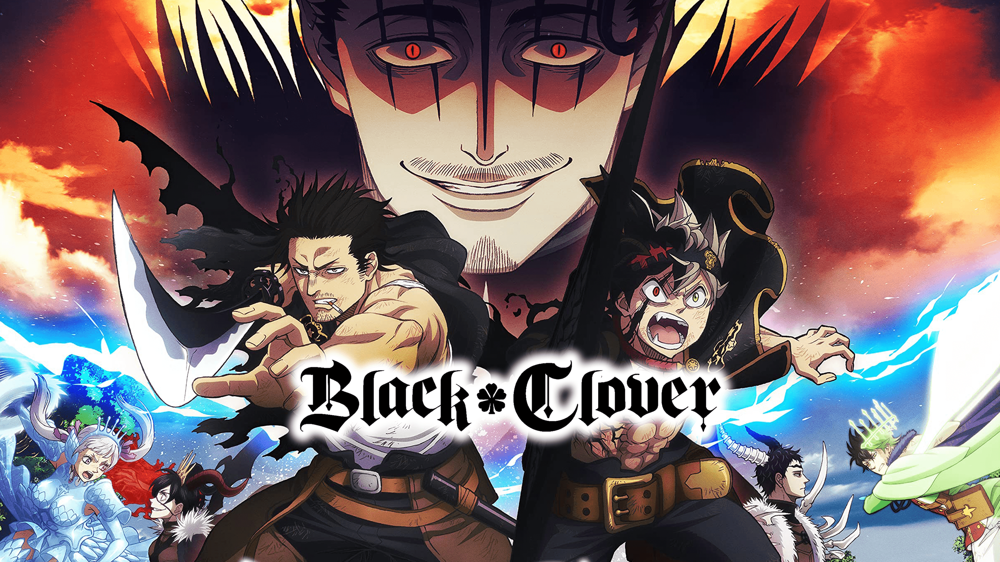
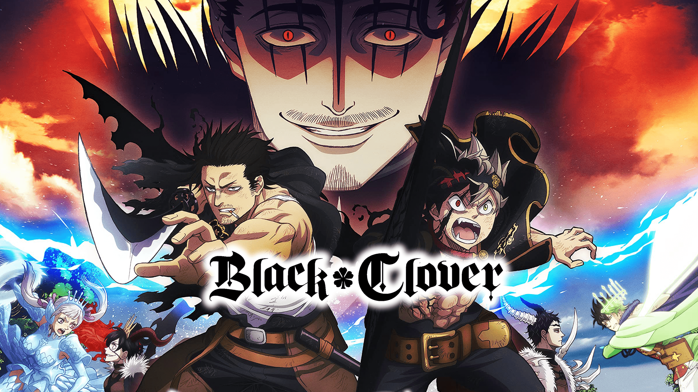

My name is Joep Duwel, and I am a Software Developer in training at ROC Mondriaan.
From a young age, I was curious about how websites and games are made, and now I turn that passion into cool projects with HTML, CSS, JavaScript, and PHP.
My goal is to continually develop myself in the IT world, learn new technologies, and eventually work on projects that make an impact.
I enjoy building websites, online stores, and interactive features using modern web technologies.
Besides my studies, I am active on the field. Sports keep me sharp, even while coding!
I always strive for results and keep learning to improve myself—every single day.
Besides coding, I have several hobbies that help me maintain a good balance between work and relaxation.
I am a big fan of various motorsports, including GT World Challenge, WEC, Formula Drift, and Formula 1. In addition, I am a true car enthusiast.
I have many LEGO sets, especially from the Marvel and Speed Champions series. I am a huge fan of them, and they are my absolute favorites to build and collect.
My Hot Wheels collection is still relatively new, but it is very fun to search for my favorite cars, especially the rare ones that are hard to find.
Music is something I can hardly live without. It has helped me a lot in the past and still does at times. I am a big fan of artists such as Juice WRLD, Sleepy Hallow, and many more.
Here are a few photos of me and my hobbies.


 
